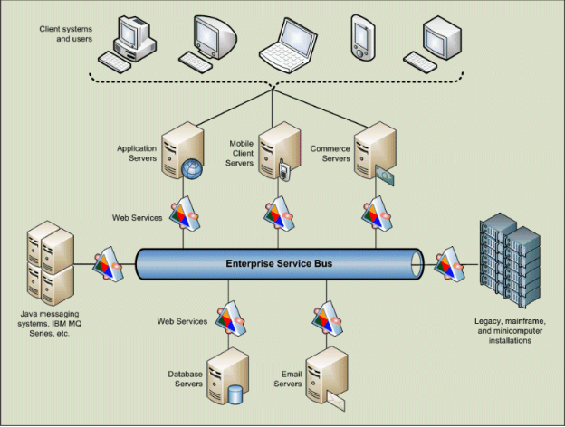
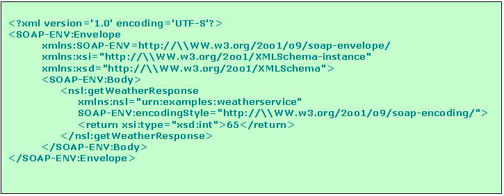
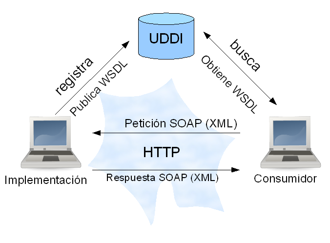

Universidad Nacional Experimental Del Táchira
Decanato De Docencia
Dpto. Ingeniería Informática
Web Services
Conocimientos previos
- Comunicación entre computadoras.
- Conocimientos básicos sobre la web.
- Funcionamiento del protocolo HTTP.
- Conceptos básicos sobre SOA.
- Comprender la estructura XML.
Objetivo de la clase
- Conocer mejor el funcionamiento del protocolo HTTP.
- Aprender el funcionamiento de servicios web.
- Como consumir un servicio web RESTful.
- Conocer servicios web que ofrecen muchos servicios públicos.
Introducción
- Hoy en día es normal ver los procesos de las organizaciones, apoyarse en sistemas de información para la automatización de procesos, tratamiento de la información, toma de decisiones, etc.
- Es normal que los diferentes sistemas hayan sido elaborados por compañías distintas.
- ¿Cómo comunicar estos sistemas entre sí?
SOA
Service Oriented Architecture
- Es un patrón de diseño de arquitectura de software basado en distintas piezas de software que proveen las funcionalidades de la aplicación como servicios a otras aplicaciones.
- Un servicio es una unidad auto-contenida de funcionalidades tales como: obtener información de un usuario, historial bancario de un usuario, listado de personas, etc.
- Los servicios se combinan con otras aplicaciones para proveer funcionalidades completas en sistemas de gran escala.
SOA
Ventajas de SOA
- Da agilidad y flexibilidad de las organizaciones.
- La arquitectura SOA permite una “personalización masiva” de las tecnologías de la información.
- Simplifica el desarrollo de soluciones mediante la utilización de estándares de la industria y capacidades comunes de industrialización.
- Permite aislar mejor a los sistemas frente a los cambios generados por otras partes de la organización.
- SOA propone organizar los sistemas en módulos pequeños (servicios), para reutilizarlos en nuevos sistemas.
- Permite alinear y acercar las áreas de tecnología y negocio.
¿Qué es un web service?
Web service
(Servicio Web)
Es un sistema de software diseñado para soportar interoperatividad entre la interación de máquinas a través de la red. W3C
Es un estándar aprobado por la W3C
Estándares empleados
- XML
- SOAP
- WSDL
- UDDI
XML
Formato desarrollador por la W3C usado para el intercambio de mensajes.
Nombre del remitente
Correo del remitente
Nombre del destinatario
Correo del destinatario
Titulo principal
Contenido del mensaje...
SOAP
- Creado inicialmente por IBM y Microsoft, ahora a cargo de la W3C.
- Compuesto de 3 elementos: sobre, conjunto de reglas de codificación y la convención (llamadas a procedimientos y respuestas)
- Permite formar protocolos mas complejos y completos.
Ejemplo de SOAP
WSDL
Web Services Description Language
- Es una interfaz escrita en XML para describir las funcionalidades de un web service.
- Permite a los programadores conocer todos los servicios disponibles, como usarlo, parámetros requeridos, valores que devuelve, entre otros.
Ejemplo de WSDL

Fuente: Wikimedia (2007).
UDDI
Universal Description
Discovery and Integration
- Según la W3C es servicio de directorio donde los negocios pueden registrar y buscar servicios web.
- Utiliza WSDL para describir los servicios web.
- Se comunica vía SOAP.
UDDI
Fuente: Junta de andalucía.
Funcionamiento del servicio web

Fuente: Freddy Fabian Gonzalez (2008).
REST
Representational
state transfer
REST
- Desarrollado por la W3C Technical Architecture Group (TAG)
- Utiliza la arquitectura Cliente-Servidor.
- Se apoya totalmente en el protocolo HTTP.
- Al igual que HTTP no posee estado y permite usar caché.
Propiedades de REST
- Rendimiento
- Escalabilidad
- Simplicidad de interfaces
- Portabilidad y Confiabilidad
RESTful
(Servicios web con REST)
- Utiliza una URL base: http://midominio.com/api/
- Un Internet media type para la transmisión de la data. (Generalmente JSON)
- Un método estándar de HTTP (GET, POST, PUT, DELETE)
Ejemplo de REST
| Recurso | GET | POST | PUT | DELETE |
|---|---|---|---|---|
|
Colección http://sitio/recurso |
Lista todos los elementos | Crea una nueva entrada | Reemplaza toda la colección | Elimina toda una colección |
|
Elemento http://sitio/recurso/123 |
Obtiene la representación de un elemento | Crea una nueva entrada con el identificador dado (rara vez se usa) | Reemplaza un elemento de la colección, si no existe la crea. | Elimina un elemento de la colección |
Ejemplo de REST
Ejemplo para obtener datos de una cuenta bancaria
//Obtiene todas las cuentas del sistema
GET http://mibanco.com/api/cuentas/
//Inserta una cuenta
POST http://mibanco.com/api/cuentas/
//Edita una cuenta
PUT http://mibanco.com/api/cuentas/123
//Elimina una cuenta
DELETE http://mibanco.com/api/cuentas/123
JSON
Javascript object notation
- Es un estándar (ECMA-404) abierto para el intercambio de datos.
- Es fácil de leer y escribir por las personas.
- Fácil para las máquinas para interpretar y generar.
- Formado por pares de atributos y valores.
- También es comúnmente utilizado para la definición de datos en base de datos NOSQL de documentos.
JSON
Ejemplo de datos de una persona en formato JSON.
{
'nombre':"María",
'apellidos':"Perez Zambrano",
'edad':28,
'direccion': { //El valor es otro objeto JSON
'calle': 'Calle #2, Av #3',
'ciudad': 'Rubio',
'estado': 'Venezuela'
},
'telefonos': [0424123456, 04258675309] //Arreglo
}
Implementación con
Slim Framework
require 'Slim/Slim.php';
\Slim\Slim::registerAutoloader();
$app = new \Slim\Slim();
$response = $app->response();
$response['Content-Type'] = 'application/json';
$app->get('/pagos', function() use($app)
{
$objeto = array(
'id'=> '123',
'monto'=> '123.23',
'descripcion'=> 'Pago realizado para inscribirse'
);
echo json_encode($objeto);
});
$app->run();
Slim Framework sirve para crear servicios web en PHP
Implementación con
ExpressJS
var users = require('../controllers/users');
module.exports = function(app, passport) {
// Configura el API para usuarios
app.route('/api/user').get(users.getAll);
app.route('/api/user').post(users.create);
app.route('/api/user').put(users.update);
app.route('/api/user').delete(users.delete);
// Configura el parámetro de userId
app.param('/api/user/userId', users.user);
};
Aplicación de servicio web

Mediante la conexión de WS puedes crear aplicaciones en menos tiempo, gracias al intercambio de data.
REST
Herramientas para
hacer peticiones
Existen herramientas que se pueden agregar a los navegadores para realizar peticiones HTTP a servicios y leer la respuesta.